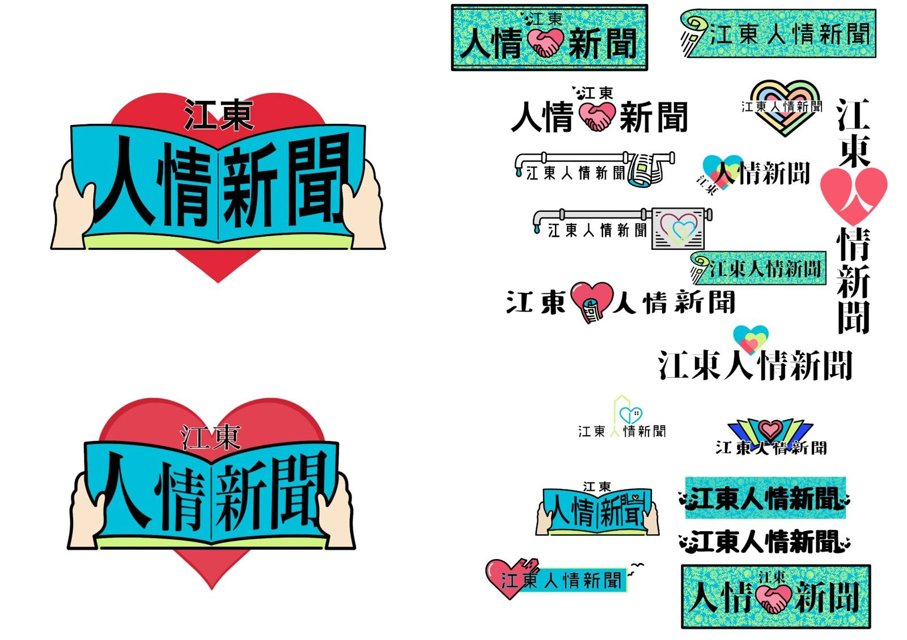

Design
江東区 人情新聞
Designed a newspaper logo for a Koto Ward city council member, developing multiple proposals and a practical identity system suited for publication use.
- Role
- Logo design / identity proposals
- Software
- Adobe Illustrator, Procreate
- Year
- 2024

Overview
The project involved translating client requests into a readable and memorable newspaper masthead. Multiple directions were explored to balance warmth, clarity, and practical use across different placements.